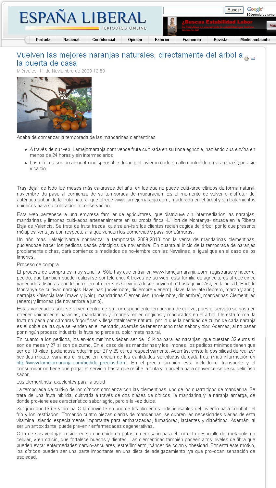
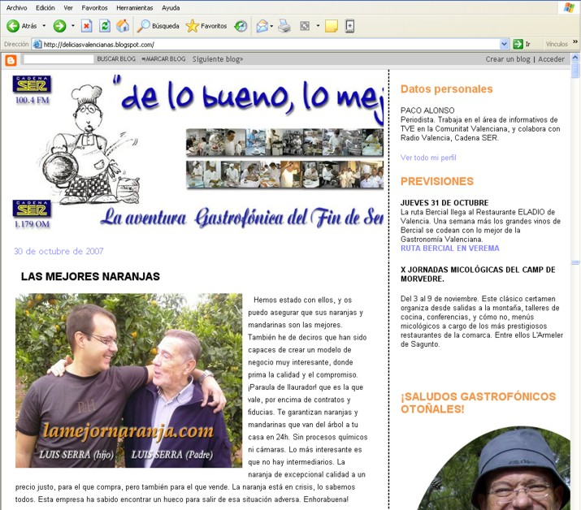
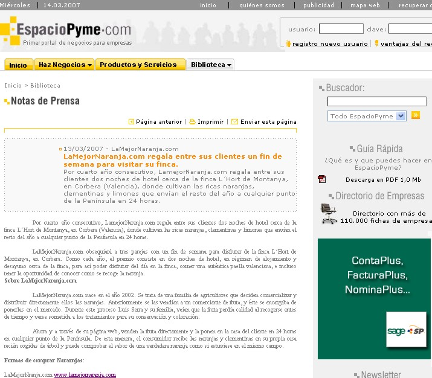
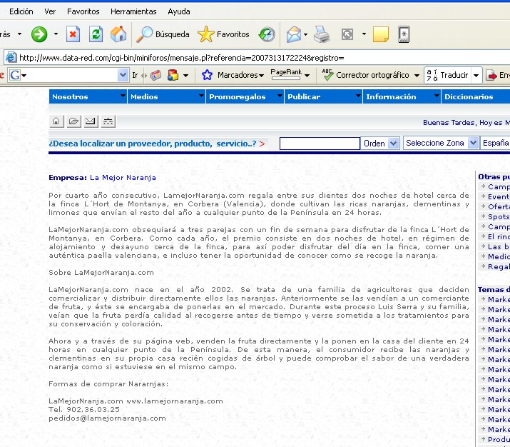
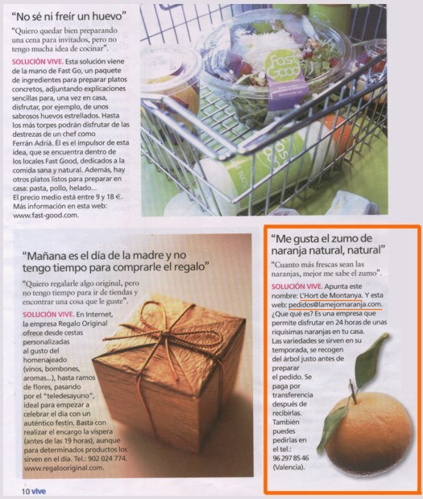

Fuente: http://www.espana-liberal.com

Fuente: http://www.espana-liberal.com
Un error movió a la empresa 3M a instalarse en el ranking de las 25 empresas más innovadoras. Tras varios fracasos previos, cuando un día uno de sus empleados colocó por error pegamento en el anverso de una nota hallaron un nicho de negocio que hasta entonces nunca había sido explotado: el «post-it».
Desde entonces la innovación ocupa una parte importante de sus respectivos procesos de negocio. Sus empleados dedican un 15 por ciento del tiempo de trabajo a innovar. El resultado de esta iniciativa ha provocado un efecto muy positivo en su cuenta de resultados: un 25 por ciento de su facturación procede de los inventos desarrollados a lo largo de los últimos años. Fue una de las primeras ideas expuestas ayer por el mago Mori, uno de los animadores del II Foro de la Innovación, con más de 250 empresas asturianas participantes.
El presentador del acto subrayó que el fomento de la creatividad da a los empleados la libertad para asumir riesgos e intentar nuevas ideas. Otro caso de éxito es el de la multinacional del mueble Ikea. Fue durante la inauguración de una de sus primeras tiendas en Suecia. Recibieron tal afluencia de clientes que tuvieron que meter a algunos en la zona del almacén. El éxito de la filosofía Ikea de administrar correctamente los inventarios y la gestión de sus centros de distribución y almacenes hizo que con el material empaquetado bajo el sistema de «móntelo usted mismo» tuviera un éxito arrollador.
Durante su presentación, Mori aseguró que en los últimos 15 años se han producido más cambios que en toda la historia de la Humanidad, en referencia al importante cambio tecnológico que se está viviendo en este momento. Como modelos de vanguardia en este sector señaló a empresas como Nokia (uno de cada tres teléfonos móviles que hay en el mundo es Nokia), Google, Skype (las comunicaciones telefónicas aprovechando las posibilidades de la banda ancha), Youtube, la tecnología Mp3 o los lápices de memoria que permiten trabajar desde cualquier lugar del mundo.
«Las empresas que no innovan están condenadas al fracaso», recalcó el presentador del acto y puso como ejemplo a compañías como Agfa que obviaron la tecnología digital dentro del mercado de las cámaras digital y vieron cómo su negocio se iba al traste, porque según los gurús de la innovación esta práctica «es un sinónimo de supervivencia».
No obstante, Mori advirtió de que innovar no consiste únicamente en inventar cosas nuevas, sino que también tiene un importante componente innovador la mejora de los procesos de negocio en marcha en la empresa. Buena prueba de ello son las tres empresas asturianas que se presentaron ayer en el Foro de la Innovación. Terrain Techonologies, Alusin y Vectio Ingeniería de Tráfico han hecho una oportunidad de negocio de sus ideas.
Los expertos presentes en este encuentro, celebrado ayer en el Palacio de Congresos, coincidieron en señalar la necesidad de adaptarse a un entorno cambiante tanto en ideas como en servicios, productos o negocios. «Quien no se adapte al cambio morirá», aseguraron. Un ejemplo simbólico de ello es la empresa «lamejornaranja.com» que envía los mejores cítricos de la huerta valenciana a domicilio a cambio de que el cliente los pruebe y si está satisfecho ingrese el importe de su compra en una cuenta. Una idea innovadora en un entorno donde las nuevas tecnologías juegan un papel cada vez más importante.
Fuente: C. JIMÉNEZ http://www.lne.es

Hemos estado con ellos, y os puedo asegurar que sus naranjas y mandarinas son las mejores. También he de deciros que han sido capaces de crear un modelo de negocio muy interesante, donde prima la calidad y el compromiso. ¡Paraula de llaurador! que es la que vale, por encima de contratos y fiducias. Te garantizan naranjas y mandarinas que van del árbol a tu casa en 24h. Sin procesos químicos ni cámaras. Lo más interesante es que no hay intermediarios. La naranja de excepcional calidad a un precio justo, para el que compra, pero también para el que vende. La naranja está en crisis, lo sabemos todos. Esta empresa ha sabido encontrar un hueco para salir de esa situación adversa. Enhorabuena!
LaMejorNaranja.com regala entre sus clientes un fin de semana para visitar su finca.
Por cuarto año consecutivo, LamejorNaranja.com regala entre sus clientes dos noches de hotel cerca de la finca L´Hort de Montanya, en Corbera (Valencia), donde cultivan las ricas naranjas, clementinas y limones que envían el resto del año a cualquier punto de la Península en 24 horas.
LaMejorNaranja.com obsequiará a tres parejas con un fin de semana para disfrutar de la finca L´Hort de Montanya, en Corbera. Como cada año, el premio consiste en dos noches de hotel, en régimen de alojamiento y desayuno cerca de la finca, para así poder disfrutar del día en la finca, comer una auténtica paella valenciana, e incluso tener la oportunidad de conocer como se recoge la naranja.
Sobre LaMejorNaranja.com
LaMejorNaranja.com nace en el año 2002. Se trata de una familia de agricultores que deciden comercializar y distribuir directamente ellos las naranjas. Anteriormente se las vendían a un comerciante de fruta, y éste se encargaba de ponerlas en el mercado. Durante este proceso Luis Serra y su familia, veían que la fruta perdía calidad al recogerse antes de tiempo y verse sometida a los tratamientos para su conservación y coloración.
Ahora y a través de su página web, venden la fruta directamente y la ponen en la casa del cliente en 24 horas en cualquier punto de la Península. De esta manera, el consumidor recibe las naranjas y clementinas en su propia casa recién cogidas de árbol y puede comprobar el sabor de una verdadera naranja como si estuviese en el mismo campo.
Formas de comprar Nararnjas:
LaMejorNranja.com www.lamejornaranja.com
Tel. 902.36.03.25
pedidos@lamejornaranja.com
Fuente: Hotfrog

LaMejorNaranja.com regala entre sus clientes un fin de semana para visitar su finca.
Por cuarto año consecutivo, LamejorNaranja.com regala entre sus clientes dos noches de hotel cerca de la finca L´Hort de Montanya, en Corbera (Valencia), donde cultivan las ricas naranjas, clementinas y limones que envían el resto del año a cualquier punto de la Península en 24 horas.
Por cuarto año consecutivo, LamejorNaranja.com regala entre sus clientes dos noches de hotel cerca de la finca L´Hort de Montanya, en Corbera (Valencia), donde cultivan las ricas naranjas, clementinas y limones que envían el resto del año a cualquier punto de la Península en 24 horas.
LaMejorNaranja.com obsequiará a tres parejas con un fin de semana para disfrutar de la finca L´Hort de Montanya, en Corbera. Como cada año, el premio consiste en dos noches de hotel, en régimen de alojamiento y desayuno cerca de la finca, para así poder disfrutar del día en la finca, comer una auténtica paella valenciana, e incluso tener la oportunidad de conocer como se recoge la naranja.
Sobre LaMejorNaranja.com
LaMejorNaranja.com nace en el año 2002. Se trata de una familia de agricultores que deciden comercializar y distribuir directamente ellos las naranjas. Anteriormente se las vendían a un comerciante de fruta, y éste se encargaba de ponerlas en el mercado. Durante este proceso Luis Serra y su familia, veían que la fruta perdía calidad al recogerse antes de tiempo y verse sometida a los tratamientos para su conservación y coloración.
Ahora y a través de su página web, venden la fruta directamente y la ponen en la casa del cliente en 24 horas en cualquier punto de la Península. De esta manera, el consumidor recibe las naranjas y clementinas en su propia casa recién cogidas de árbol y puede comprobar el sabor de una verdadera naranja como si estuviese en el mismo campo.
Formas de comprar Naranjas:
LaMejorNaranja.com www.lamejornaranja.com
Tel. 902.36.03.25
pedidos@lamejornaranja.com
Fuente: EspacioPyme

LaMejorNaranja.com regala entre sus clientes un fin de semana para visitar su finca.
Por cuarto año consecutivo, LamejorNaranja.com regala entre sus clientes dos noches de hotel cerca de la finca L´Hort de Montanya, en Corbera (Valencia), donde cultivan las ricas naranjas, clementinas y limones que envían el resto del año a cualquier punto de la Península en 24 horas.
LaMejorNaranja.com obsequiará a tres parejas con un fin de semana para disfrutar de la finca L´Hort de Montanya, en Corbera. Como cada año, el premio consiste en dos noches de hotel, en régimen de alojamiento y desayuno cerca de la finca, para así poder disfrutar del día en la finca, comer una auténtica paella valenciana, e incluso tener la oportunidad de conocer como se recoge la naranja.
Sobre LaMejorNaranja.com
LaMejorNaranja.com nace en el año 2002. Se trata de una familia de agricultores que deciden comercializar y distribuir directamente ellos las naranjas. Anteriormente se las vendían a un comerciante de fruta, y éste se encargaba de ponerlas en el mercado. Durante este proceso Luis Serra y su familia, veían que la fruta perdía calidad al recogerse antes de tiempo y verse sometida a los tratamientos para su conservación y coloración.
Ahora y a través de su página web, venden la fruta directamente y la ponen en la casa del cliente en 24 horas en cualquier punto de la Península. De esta manera, el consumidor recibe las naranjas y clementinas en su propia casa recién cogidas de árbol y puede comprobar el sabor de una verdadera naranja como si estuviese en el mismo campo.
Formas de comprar Nararnjas:
LaMejorNranja.com www.lamejornaranja.com
Tel. 902.36.03.25
pedidos@lamejornaranja.com
Fuente: Data-Red
LaMejorNaranja.com regala entre sus clientes un fin de semana para visitar su finca.
Por cuarto año consecutivo, LamejorNaranja.com regala entre sus clientes dos noches de hotel cerca de la finca L´Hort de Montanya, en Corbera (Valencia), donde cultivan las ricas naranjas, clementinas y limones que envían el resto del año a cualquier punto de la Península en 24 horas.

Fuente: Infoaliment.com

“Cuando más frescas sean las naranjas, mejor me sabe el zumo”.
SOLUCIÓN VIVE: Apunta este nombre: L´Hort de Montanya. Y esta web: pedidos@lamejornaranja.com. ¿Que qué es? Es una empresa que permite disfrutar en 24 horas de unas riquísimas naranjas en tu casa. Las variedades se sirven en su temporada. Se recogen del árbol justo antes de preparar el pedido. Se paga por transferencia después de recibirlas. También puedes pedirlas en el teléfono: 96.297.85.46 (Valencia).
Fuente: Vive
MLuisa: Querida Ximena No hay problema si lo tomas con leche yo lo tomo con leche para café esta riquísimo de ese mod...
Carmen Serra: Gracias Rita, nos alegramos de que te haya gustado nuestro post :)...
Carmen Serra: Gracias por tu sugerencia Rita, ¡lo probaremos! ;)...
Isabel Áreas: Que rica la torta de concha de naranja y los pasteles agregándoles huevos y quesos y metiéndolo en el horno, p...